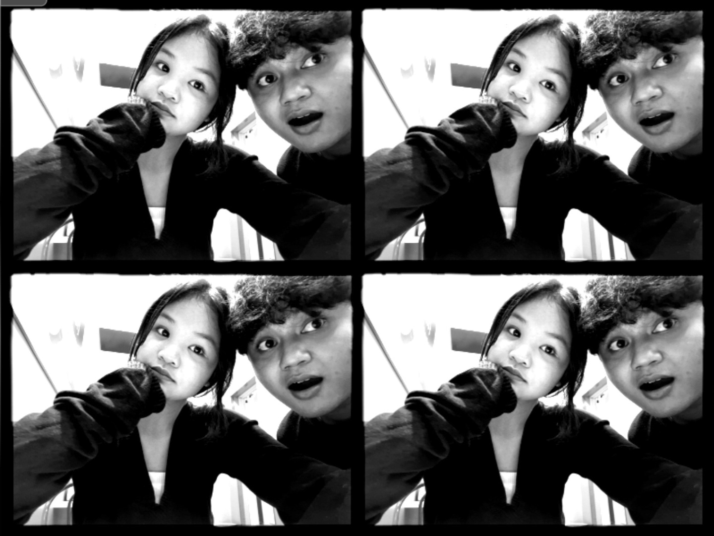
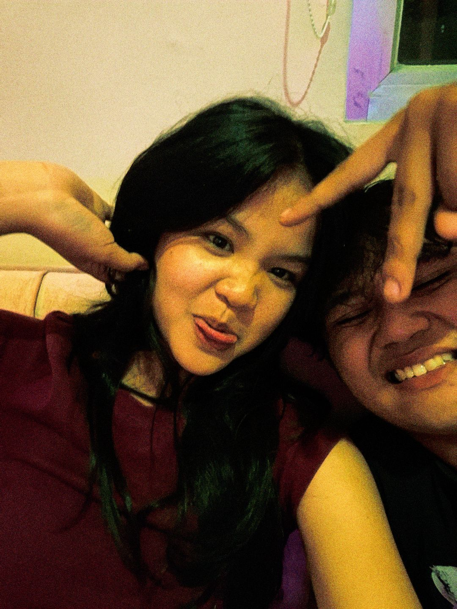
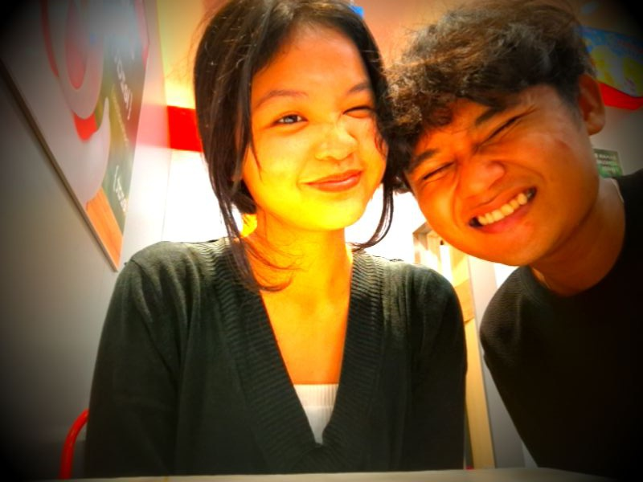

Our first encounter
The day I first saw you, I fell into a quiet uncertainty of feeling— because in my eyes, you were the most luminous presence among all, as if even light itself knew where to gather.
Every page you open is a memory we created together.
Every smile we shared, every laugh we created, became the most beautiful memories I will always keep.
Explore Our Journey
Every picture holds a memory, every memory holds a part of us.

Our First Photos 🌸

Quality Time ⌛

Ice Cream Adventure 🍦

Smile Like Cherry 🍒

Since our very first beginning.
The day I first saw you, I fell into a quiet uncertainty of feeling— because in my eyes, you were the most luminous presence among all, as if even light itself knew where to gather.
That simple conversation slowly turned into a quiet pause I began to wait for each day, as if time itself lingered just a little longer so your presence could stay with me a while more.
My first memory of us is a quiet ride home— your hand in mine, and a silence that spoke more than words ever could.
I still choose you, and hope tomorrow will be the same.

Yahya
Thank you for taking your time
reading every little memory.
Mungkin website ini suatu hari akan menjadi
hanya satu file biasa di dalam sebuah folder yang terlupakan.
Dan aku minta maaf kalau tampilannya tidak seindah atau semenarik dunia
yang sudah begitu rapi seperti Shopee atau website besar lainnya.
Tapi tetap… aku berharap, apa yang ada di dalamnya bukan soal tampilan,
melainkan sesuatu yang tidak bisa digantikan oleh desain yang sempurna—
perasaan yang nyata, dan diam-diam hanya ditujukan untukmu.
Not because life is perfect. But because every imperfect day feels easier when you're in it. Thank you for existing. 🤍